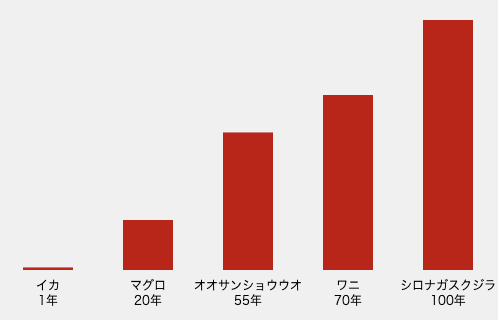
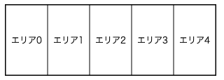
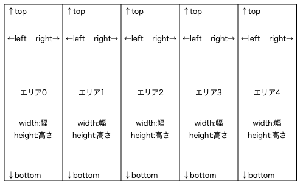
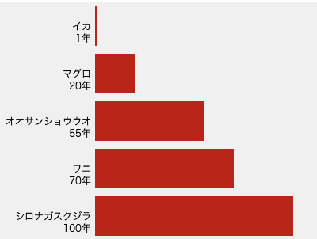
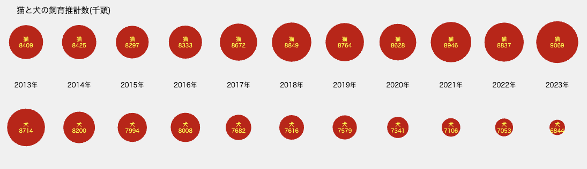

項目ごとのデータを図形の大きさで比較
描いた図形の大きさを変えることで、項目ごとのデータを比較してみよう。例えば、矩形(長方形)の大きさでデータを表したのが、棒グラフや帯グラフです。大きさで表す

右図は、水生生物の寿命を棒の高さで表しています。生物の名前とその平均寿命の年数(さまざまな調査があり、あくまで目安です）のデータを次のようなテーブルと考えます。
| 名前 | イカ | マグロ | オオサンショウウオ | ウニ | シロナガス クジラ |
|---|---|---|---|---|---|
| 寿命 | 1.0 | 20.0 | 55.0 | 70.0 | 100.0 |
このデータを棒グラフとして描くために必要な要素を考えてみましょう。
- (1)テーブルからデータを得る
- (2)それに応じて、矩形の大きさを計算する
- (3)画面の大きさ、データ項目の数に応じて、矩形を描く位置を計算する
Datamate.jsを使う準備
Datamateライブラリを使う、つまりDatamate.jsファイルを参照できるように指定するには、2つの方法があります。- 【方法1】CDN(Content Delivery Network)を通して、ライブラリを取得して使用
ライブラリのコピーを持っておくのではなく、ネットワークから読み込む方法。次のscriptタグをHTMLファイルのhead要素内に書く。 Processingエディタのindex.htmlタブを開き、次のように<script>タグを追加する。<!-- OK, YOU CAN MAKE CHANGES BELOW THIS LINE AGAIN --> <script language="javascript" type="text/javascript" src="https://cdn.jsdelivr.net/gh/datamate-js/release@latest/dist/datamate.js"> </script>
- 【方法2】ライブラリをダウンロードし、保存して使用
- (1)まず、 DatamateライブラリのwebサイトからDatamate.jsをダウンロードし、スケッチフォルダ内のlibrariesフォルダに保存する。
- (2)Processingエディタのindex.htmlタブを開き、次のように<script>タグを追加する。
<!-- OK, YOU CAN MAKE CHANGES BELOW THIS LINE AGAIN --> <script language="javascript" type="text/javascript" src="libraries/Datamate.js"> </script>
Datamate.jsを使う
5種類の水生生物の平均寿命を、矩形の大きさで表すプログラム(リストT2-1-1)を書きながら、Datamate.jsの使い方を説明します。[1]視覚化の対象となる内部テーブルを作る
まず、描くデータをテーブルとして考えます。そして、このテーブルのイメージでDatamate.jsにデータを取り込みます。 今、対象となる寿命データは次のようなものです。| 名前 | イカ | マグロ | オオサンショウウオ | ウニ | シロナガスクジラ |
|---|---|---|---|---|---|
| 寿命 | 1.0 | 20.0 | 55.0 | 70.0 | 100.0 |
このテーブルの行と列には、それぞれヘッダ(行の名前、列の名前)があります。 ヘッダのあるなしは任意に指定できますが、この例のようにヘッダ行、ヘッダ列があるテーブルがデフォルトです。
ヘッダ行、ヘッダ列を除いたデータ部分のことをデータテーブルと呼んで区別します。この表の場合、データテーブルは一行だけです。
Datamatemのmake()関数を使って、1行ごとに、行の名前とデータを指定します。
Datamate.make("行の名前", [データの配列]);
文字列は引用符で囲みます(二重"でも一重'でもいい)。このデータの場合、次のようにmake()関数を2回実行します。
ひとつ目のmake()関数は、ヘッダ行を作るもので、列のヘッダを配列内に指定しています。
Datamate.make("名前", ["イカ", "マグロ", "オオサンショウウオ", "ワニ", "シロナガスクジラ"]);
Datamate.make("寿命", [1.0, 20.0, 55.0, 70.0, 100.0]);
このようにして作られたデータテーブルの列や行の情報は次の関数で知ることができます。
- ・Datamate.columnCount()：列の数を返す
- ・Datamate.rowCount()：行の数を返す
- ・Datamate.columnName(インデックス):列のヘッダを返す
- ・Datamate.rowName(インデックス):行のヘッダを返す
[2]データを表示する領域(レイアウトスペース)を作る
データ表示のための領域、この例だと棒グラフを描く領域をレイアウトスペースと呼びます。この領域を複数のエリアに分割して、エリアの中にデータを表示します。この例だと、領域を5つに分けて、その中に矩形を描きます。Datamate.makeAreas()関数を使って、レイアウトスペース作り、エリアに分割します。
Datamate.makeAreas(x座標, y座標, 横幅, 高さ, 横方向のエリア数, 縦方向のエリア数);キャンバス内でのレイアウトスペースの(x,y)座標と、幅と高さ、そしてその領域を何列に分けるか、何行に分けるかを指定します。 キャンバス全体をレイアウトスペースとし、横方向に5つのエリアに分割するには次のように書きます。
Datamate.makeAreas(0, 0, width, height, 5, 1);この例では、矩形の下に種類と数値を表示するため、矩形を描くエリアの高さを、キャンバスの高さより50ピクセルだけ小さくしたいので、エリアの高さをheight-50としました。
Datamate.makeAreas(0, 0, width, height-50, 5, 1);この例では、水生生物の数が5なので、分割するエリアの列数を5と指定しました。データの種類(データテーブルの列数)が増えたら分割したいエリア数も増えます。データの種類の変更を想定すると、具体的な数を書かずに、次のようにDatamate.columnCount()関数を使って、列数を指定する方が変更に柔軟に対応するプログラムと言えます。
Datamate.makeAreas(0, 0, width, height-50, Datamate.columnCount(), 1);
[3]分割したエリアに番号を振る

Datamate.makeAreas()関数で分割したエリアには、先頭を0として、順番に番号(インデックス)が振られます。この例では、0から4までの番号です。データをどのエリアに表示するかを指定するときに、この番号を使います。
この番号を変えることもでき、Datamate.bindAreas()関数を使って、エリアに番号を振ります。
Datamate.bindAreas([番号, 番号,..]);
デフォルトは、次のようにbindAreas()関数を実行したのと同じことです。
Datamate.bindAreas([0, 1, 2, 3, 4]);番号は必ずしも、0から始める必要はなく、連続の数字である必要もありませんが、データエリアに振られるデータのインデックス(0から順に振られる)と合わせておく、つまりデフォルトのままにするのがわかりやすいでしょう。
リストT2-1-1で、次をsetup()関数に入れると、水生生物の表示順が逆転します。
Datamate.bindAreas([4, 3, 2, 1, 0]);
[4]テーブルから値を取り出す
データを反映したグラフィックスをエリアに描画するために、テーブルから値を取り出すにはvalue()関数を使います。
Datamate.value(行の指定, 列の指定);
行の指定：行の名前あるいはデータテーブルのインデックス(0から振られる。ヘッダ行の次が0)
列の指定：列の名前あるいはデータテーブルのインデックス(0から振られる。ヘッダ列の次が0)
例えば、イカの寿命データを取り出すには、次のように書きます。
Datamate.value("寿命", 0)
または
Datamate.value(Datamate.rowName(0), 0);
rowName()関数は行のヘッダ(名前)を返す関数です。列のヘッダはcolumnName()関数で得られます。
寿命データの最小値は1年、最大値は100年で、これを表示のための適切な大きさに換算します。この計算に便利なのが map関数です。
寿命が0なら0ピクセル(変数minに入れておく)、寿命が100年なら250ピクセル(変数maxに入れておく)とすることを考えます。 データの数値を矩形の高さに計算するには、下のように書きます。
let h = map(データの数値, 0, 100, min, max); //矩形の高さを計算
[5]データの描画をする関数を定義する
データを矩形の高さとして描画するこの例の描画処理を分解すると、次のようになります。- ・テーブル内のデータを取り出す
- ・そのデータから表示する矩形の高さを計算する
- ・色を指定し、表示エリアの中央に、矩形を描く
- ・色を指定し、表示エリアの下に、データ名と数値を描く
関数として描画処理をまとめておくと、それをdraw()関数から呼び出すだけでよく、エリアごとの描画処理をdraw()関数内で記述する必要がなくなります。
この例では、寿命データのインデックスとエリアの番号が一致しているので、このインデックスを 関数の引数として渡すことにします。関数名は任意です。
function drawData(index) {
.....
}
例えば、イカのデータを表示するには、次のように引数を指定します。
drawData(0); // 表示エリア0に'イカ'寿命データを表示
[6]エリアの中央の位置、大きさなどの情報を得る
描画処理を行う関数(上の[5]で定義したdrawData()関数)内では、どの座標に 矩形を描くかの情報、つまりエリアの情報(中央位置の座標や下辺のy座標)が必要になります。
Datamate.area()関数は、描画エリアの情報(位置や大きさの情報を保持するareaオブジェクト)を返します。
Datamate.area(エリアに振られた番号);Datamate.area()関数が返す値(areaオブジェクト)には、次のような変数に領域の情報が保存されています。
- ・左上隅の座標: x, y
- ・中央の座標: centerX, centerY
- ・左辺,右辺のx座標: left, right
- ・上辺,下辺のy座標: top, bottom
- ・幅と高さ: width, height
let area = Datamate.area(index);
そして、エリアの左右中央に底辺に合わせて矩形を描くため、変数centerXとbottomを使って次のように書きます。
rect(area.centerX-rw/2, area.bottom-h, rw, h); // rect(左上のx座標、左上のy座標, 幅, 高さ)
【リストT2-1-1】
let max = 250.0; //矩形の高さの最大値
let min = 0.0; //矩形の高さの最小値
let rw = 50; //矩形の幅
function setup() {
createCanvas(500, 320);
noStroke();
textAlign(CENTER, CENTER); //文字を表示する際、中心の座標を指定
Datamate.make("名前", ["イカ", "マグロ", "オオサンショウウオ", "ワニ", "シロナガスクジラ"]);
Datamate.make("寿命", [1.0, 20.0, 55.0, 70.0, 100.0]);
Datamate.makeAreas(0, 0, width, height-50, Datamate.columnCount(), 1); //Datamate.columnCount()はデータの列数
}
function draw() {
background(240);
for (let i=0; i<Datamate.columnCount(); i++) {
drawData(i);
}
}
function drawData(index) {
let area = Datamate.area(index);
let h = map(Datamate.value("寿命", index), 0, 100, min, max);
fill(200, 0, 0);
rect(area.centerX-rw/2, area.bottom-h, rw, h);
fill(0);
text(Datamate.value("名前", index), area.centerX, area.bottom+15);
text(Datamate.value("寿命", index) +"年", area.centerX, area.bottom+30);
}
演習問題
【問題T2-1-1】

リストT2-1-1を、帯グラフに書き直してみよう。
【問題T2-1-2】 次のような猫、犬の飼育推定数の11年分のデータを、円の大きさで表してみましょう。
| 年 | 2013年 | 2014年 | 2015年 | 2016年 | 2017年 | 2018年 | 2019年 | 2020年 | 2021年 | 2022年 | 2023年 |
|---|---|---|---|---|---|---|---|---|---|---|---|
| 猫 | 8409 | 8425 | 8297 | 8333 | 8672 | 8849 | 8764 | 8628 | 8946 | 8837 | 9069 |
| 犬 | 8714 | 8200 | 7994 | 8008 | 7682 | 7616 | 7579 | 7341 | 7106 | 7053 | 6844 |

このテーブルを
Datamateに取り込むには次のようにmake()関数を指定します。
Datamate.make("年", ["2013年", "2014年", "2015年", "2016年", "2017年",
"2018年", "2019年", "2020年", "2021年", "2022年", "2023年"]);
Datamate.make("猫", [8409, 8425, 8297, 8333, 8672, 8849, 8764, 8628, 8946, 8837, 9069]);
Datamate.make("犬", [8714, 8200, 7994, 8008, 7682, 7616, 7579, 7341, 7106, 7053, 6844]);
このデータは6800千頭から9100千頭の間で変化します。この数値を、円の直径に換算する際、0からエリアの幅の間で変化させるとほとんど区別がつかない状態になります。上の図では、変化のある範囲を強調するように、6000から10000の値を0からエリアの幅に換算しています。
let value = map(数値, 6000, 10000, 10, area.width); //データを円の直径に換算